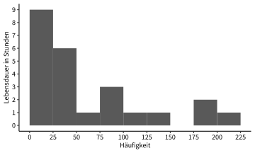

Lösungen der Übungsaufgaben
Sitzung 1
1.3.17 Aufgaben 1 und 2
– keine Musterlösungen –
1.3.18 Aufgabe 3
| Variable | Skalenniveau | Variablentyp | Anmerkungen | |
|---|---|---|---|---|
| a) | Lebensalter in Jahren | Verhältnisskala | diskret | ganze Zahlen vorausgesetzt |
| b) | Regenmenge in mm | Verhältnisskala | stetig | |
| c) | Güteklasse | Ordinalskala | qualitativ | |
| d) | Passagieraufkommen | Verhältnisskala | diskret | |
| e) | Baujahr | Intervallskala | diskret | |
| f) | Geschwindigkeit in km/h | Verhältnisskala | diskret | |
| g) | Sozialstatus (Unter-, Mittel und Oberschicht) | Ordinalskala | qualitativ | |
| h) | Temperatur in °F | Intervallskala | stetig | |
| i) | Fläche eines Bundeslands in km² | Verhältnisskala | stetig | |
| j) | Temperatur in K | Verhältnisskala | stetig | 0 K ist ein natürlicher Nullpunkt |
| k) | Einwohnerzahl | Verhältnisskala | diskret | |
| l) | Pegelstand | Intervallskala | stetig | willkürlicher Nullpunkt |
| m) | Staatsangehörigkeit | Nominalskala | qualitativ | |
| n) | Interesse an Statistik (gering bis hoch) | Ordinalskala | qualitativ | |
| o) | Klausurnote | Ordinalskala | qualitativ | wird jedoch oft metrisch verwendet |
| p) | Bodentyp | Nominalskala | qualitativ | |
| q) | Entfernung zum Stadtzentrum in km | Verhältnisskala | stetig | |
| r) | Körpergröße | Verhältnisskala | stetig | |
| s) | Kleidergröße (S bis XXL) | Ordinalskala | qualitativ | |
| t) | Monatliches Nettoeinkommen | Verhältnisskala | stetig | oder diskret für Cent-Beträge |
1.3.19 Aufgabe 4
1.3.19.1 a)
Die Werte sind im Bereich zwischen 3 und 210 Stunden. Eine Klassengröße von 25 Stunden bietet sich an, es sind jedoch auch andere Größen denkbar. Da die Variable diskret zu sein scheint, können die Klassengrenzen als ganze Zahlen angegeben werden.
| Wert \(x_i\) | Häufigkeit \(f_i\) |
|---|---|
| 1–25 | 9 |
| 26–50 | 6 |
| 51–75 | 1 |
| 76–100 | 3 |
| 101–125 | 1 |
| 126–150 | 1 |
| 151–175 | 0 |
| 176–200 | 2 |
| 201–225 | 1 |
1.3.19.2 b)
Das Resultat sollte je nach gewählter Klassengröße in etwa so aussehen:

1.3.19.3 c)
Die Verteilung ist unregelmäßig abfallend.
1.3.20 Aufgabe 5
Sind die folgenden Aussagen wahr oder unwahr?
- wahr
- wahr
- unwahr
- wahr
- unwahr
- unwahr
- wahr
- wahr
- unwahr
- unwahr
- wahr
- wahr
- unwahr
- unwahr
- unwahr
- wahr
- wahr
- wahr